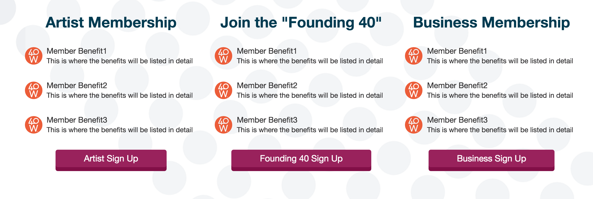
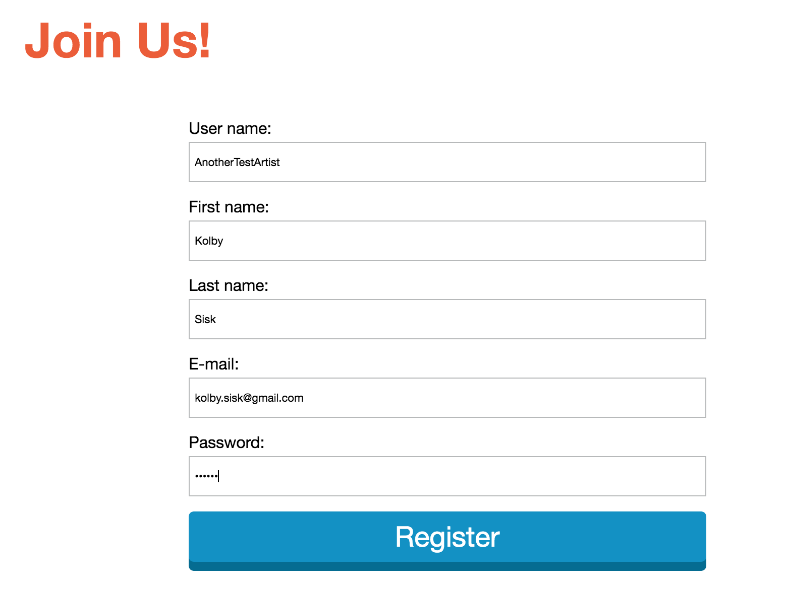

Managing Content
To manage the content of your site first login to the administration area. To login go to 40westarts.com/admin. Once logged in you'll need to open the Pages application.

Select the page you want to edit in the content tree. Make sure Page tab is selected, and you'll see your editable areas outlined. Make your changes and then press the save button.
Adding donation links
Create a new link that links to: https://www.paypal.com/cgi-bin/webscr%20%20?cmd=_s-xclick&hosted_button_id=26DWTTW4LHV6Q
Adding Constant Contact sign up links
Create a new link that links to: https://visitor.r20.constantcontact.com/d.jsp?llr=lmek5jhab&p=oi&m=1107361599883&sit=w8pfamigb&f=8e66233f-e546-4f91-8fa4-e5c5ced7fdf0
WYSIWYG
The WYSIWYG (What you see is what you get) editor allows you to add small style tweeks to the content. You can do things like change font size and color, add images or videos, add widgets, write html, and much more.
Adding Page Types
Dynamic items on the site are managed as Page Types. Page types make it easy for content admins to add a new item to a list. Adding a new page type is done using the content tree. For example if you want to add a new Opportunity to the About page you should open the About page in the content tree, find the Opportunities folder, click on it and then click the + button. You'll be prompted to select the page type you want to create. Select the page type you're creating and then fill out the form.
Adding Destinations
Destinations can only be created by the user: 40WestArts. Log in as 40WestArts using the site's login form at 40westarts.org/log-in. Navigate to the profile page. 40westarts.org/business/40WestArts. You'll see a new button to add a destination.
Fill out the form and you're destination has been created. Destinations are auto activated so you'll be able to see them in the destinations list as soon as you've created it.
Creating A New Page
Adding a new page is done using the content tree. First select the location you want the new page to live. This is an important step to keeping your site structured and clean. For example if you're creating a new page that will be linked to from the About page, you should create that page under the About page. You can do this by selecting the about page, pressing the + button, and selecting to create a new Page. Enter a name for your page, and select a template. You should select one of the template pages by searching for "template". Once you've created your new page you should go to the Pages tab and start entering content for your page. Your new page will by default be included in the site's navigation, and the url will be relative to the location of the new page in the tree. In our example the page was under the About page, so the url would be 40westarts.org/About/MyNewPage.
To remove your new page from the site's navigation you will need to go to the Navigation settings under the properties tab and uncheck "Show in navigation".
After creating a page you always want to change the template settings to use the nearest master page. This tells the page to use the template you selected and not it's parent's template. To do that click on the Template tab.
Then find and select the "Only the nearest master page" option. Then save.

Creating Forms
Creating a new form is done in the Forms application.

To create a new form press the new form button. Enter a name for your form and press Save.
You'll be taken to the Form Builder. This is where you can build out your form by dragging components into the middle region. Play around with all the components and learn what they are. For regular input fields you should use the Text Box component. For a larger text area use the Text Area component. Once you've added a component to the form you'll see configuration options on the right. This is where you can change the input label, default value, set if it's required, and other settings. You can also add validation rules like a max character limit.

It's important to notice the side menu that will take you to other important configuration options for your new form. On the General page you can set options like where the page should redirect to after submitting, or the button text. The Email Notification page allows you to send an email to a specific email address every time someone submits the form. The Recorded Data page allows you to see the submission data for your form.
Using Forms
You've created a new form; now it's time to add it to a page. Navigate to the Pages application and find the page you wish to add the form to. Click in the editable region and find the exact spot you want to add the form. Find the Insert/Edit Widget button on the WYSIWYG editor. It's the button with a gear in the middle.
A window will open asking you to select a widget. Search for "form" and select the On-line Form widget. Another window will pop up asking you the name of the form you'd like to use. Press the select button and find and select your new form. Press the Save & Close button, and then finish up by saving the Page.
Creating A New User
To create a new user make sure you are logged out and then click on the Sign Up link located at the top right of the page. Scroll down and click on the button for the type of user you wish to sign up (Artist, Business, Founding40).
Fill out the form. Make sure you use a random password, and don't forget it. Use a service like random.org to generate passwords for your users. After signing up the user an email will be sent to the email address you entered in the form with the user's login credentials.
After signing up you'll be redirected to the user's profile page. Here you can edit the user's profile info by pressing the Edit button.
Media Library
The Media Library is where you will manage the site's images. You will see the media library pop up when you're asked to select an image. You can also get to the media library via the Media Library application, similar to how you get to the Pages application.
You'll see the images media library. Click the edit button to see the content of the images media library.
The contents of the images media library is grouped by folders. You should strive to keep this tree structured nicely. You can create new folders by selecting images in the tree and pressing the + button.
To change the site you're editing click the drop down menu at the top of the page.
Custom Table Data
The Custom Table Data application allows you to manage custom data used throughout the site. This data includes artist mediums, business industries, and event categories. The Custom Table data also contains data for the Artists, Businesses, Projects, Events, and Founding40.
Clicking the edit button will show you the data in the table. Click the edit button for a row in the table to edit that row, or click the New Item button to add to the table.
If the need ever arises that a user's artist/business/project/event data needs to be edited (artist statement for example) this is where you will edit that data.
User Data
The Users application is where every user on the site stored. This is where you can edit general user data like name, password, admin privilege level, website, and profile image.